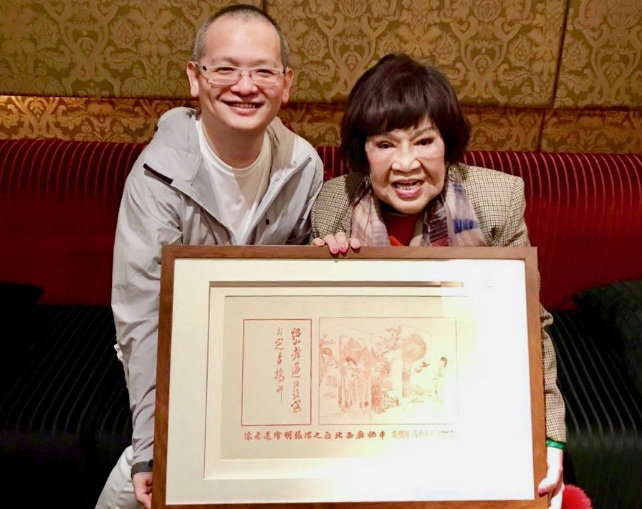
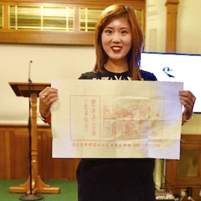
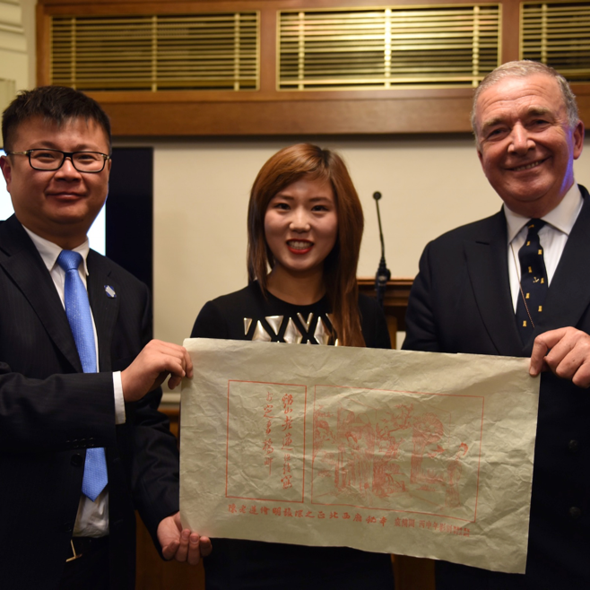
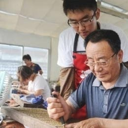
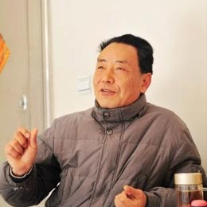
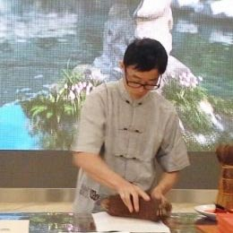

台湾戏剧之母金钟特别贡献奖得主周游收藏《西厢窥简图》
2017-03-13 海峡经济网
2017年3月4日晚，安徽文交中心在中国台北举行仪式，向台湾戏剧之母、金钟特别贡献奖得主周游赠送《西厢窥简图》...
韩国驻华大使馆陆军武官大领丁奎必收藏《西厢窥简图》
2017-01-19 网易
2017年1月18日晚，安徽文交中心向韩国驻华大使馆陆军武官大领丁奎必赠送《西厢窥简图》仪式在北京王府井南京大饭店举行...

《西厢窥简图》赞助王曌华宸参赛英国特技飞行
2016-12-26 中国经济网
2016年12月26日，《西厢窥简图》赞助英国雅皮士特技飞行队成员王曌华宸征战2017英国特技飞行赛仪式在伦敦举行。雅皮士特技飞行队是欧洲公认最优雅的编队飞行表演队，同时也是世界首支碳零排放的绿色环保特技飞行队。王曌华宸是中国第一个非军方女特技飞行员。2015年9月，王曌华宸在中国郑州航展完成了她的中国特技飞行首秀...

英国皇家海军最高将领Admiral Lord West上将收藏《西厢窥简图》
2016-12-03 中华网
伦敦时间12月2日晚，英国国会大厦。英国议会上议会议员并任英国皇家海军最高将领Admiral Lord West上将接受UK FLY Aviation董事长王曌华宸和WTS China CEO邵晨博士代表安徽文交中心赠送的《西厢窥简图》。
《西厢窥简图》作为第十届外交官烹饪大赛金奖颁出
2016-11-25
2016年11月25日晚，深圳，由中国国际外交公关协会主办的第十届外交官烹饪大赛经过5小时的激烈角逐决出金银铜牌。安徽文交中心藏品《西厢窥简图》作为最珍贵的奖品颁发给了金牌得主俄罗斯选手...

大师陈义时：手抵刀刃刻雕版 一本书籍传千年
2016-07-18 扬州网
雕版印刷与造纸术等技艺相辅相成，成就人类文明的传承。扬州作为中国雕版的唯一发祥地，在人类发展史上可谓做足了贡献。昨天下午，记者走近国家级非遗传承人、一代雕版大师陈义时，了解雕版印刷的神奇魅力...

雕版印刷大师陈义时：为了一句承诺
2015-01-27 扬州晚报
陈义时，出生于1947年11月，江苏扬州人，国家级非物质文化遗产雕版印刷技艺代表性传承人，高级工艺美术师，江苏省工艺美术大师。陈义时出身于雕版世家，祖父陈开良、父亲陈正春世代从事雕版技艺，开有雕版作坊，是扬州著名的雕版师，扬帮雕版技艺的领头人。陈义时从十四岁起随父刻苦钻研雕版技艺，一生致力于雕版工艺事业并作出重大贡献...

两件扬州汉代文物引关注
2014-08-17 和讯网
昨天，习近平夫人彭丽媛邀请出席青奥会开幕式的部分外方领导人夫人参观了南京博物院。现场观看了扬州雕版印刷、宜兴紫砂壶、苏州核雕、徐州香包、南京云锦、惠山泥人、苏州刺绣、桃花坞年画等中国非物质文化遗产展的制作演示，民间艺人精巧的技艺令来宾们赞叹不已。江都王陵出土的铜编钟和30多年前出土于扬州的错银神兽纹铜牛灯，吸引了彭...